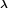
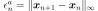
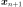

OptimizationResult¶
- class OptimizationResult(*args)¶
Optimization result.
Returned by optimization solvers, see
OptimizationAlgorithm.- Parameters
- problem
OptimizationProblem Problem being solved.
- problem
Methods
computeLagrangeMultipliers(*args)Compute the Lagrange multipliers.
Draw the convergence criteria history.
Draw the optimal value history.
Accessor to the absolute error.
Accessor to the evolution of the absolute error.
Accessor to the object's name.
Accessor to the constraint error.
Accessor to the evolution of the constraint error.
Accessor to the number of evaluations.
Accessor to the final points.
Accessor to the final values.
getId()Accessor to the object's id.
Accessor to the input sample.
Accessor to the number of iterations.
getName()Accessor to the object's name.
Accessor to the optimal point.
Accessor to the optimal value.
Accessor to the output sample.
Accessor to the Pareto fronts indices in the final population.
Accessor to the underlying optimization problem.
Accessor to the relative error.
Accessor to the evolution of the relative error.
Accessor to the residual error.
Accessor to the evolution of the residual error.
Accessor to the object's shadowed id.
Accessor to the object's visibility state.
hasName()Test if the object is named.
Test if the object has a distinguishable name.
setEvaluationNumber(evaluationNumber)Accessor to the number of evaluation.
setFinalPoints(finalPoints)Accessor to the final points.
setFinalValues(finalValues)Accessor to the final values.
setIterationNumber(iterationNumber)Accessor to the number of iterations.
setName(name)Accessor to the object's name.
setOptimalPoint(optimalPoint)Accessor to the optimal point.
setOptimalValue(optimalValue)Accessor to the optimal value.
setParetoFrontsIndices(indices)Accessor to the Pareto fronts indices in the final population.
setProblem(problem)Accessor to the underlying optimization problem.
setShadowedId(id)Accessor to the object's shadowed id.
setVisibility(visible)Accessor to the object's visibility state.
store
- __init__(*args)¶
- computeLagrangeMultipliers(*args)¶
Compute the Lagrange multipliers.
- Parameters
- xsequence of float, optional
Location where the multipliers are computed If not provided, the optimal point is used
- Returns
- lagrangeMultipliersequence of float
Lagrange multipliers of the problem at point x. It needs an extra call to the objective function gradient unless it can be computed during the optimization (AbdoRackwitz or SQP).
Notes
The Lagrange multipliers  are associated with the following Lagrangian formulation of the optimization problem:
where .
- The Lagrange multipliers are stored as , where:
 is of dimension 0 if there is no equality
constraint, else of dimension the dimension of ie the number of scalar equality constraints
is of dimension 0 if there is no equality
constraint, else of dimension the dimension of ie the number of scalar equality constraintsand are of dimension 0 if there is no bound constraint, else of dimension of

- is of dimension 0 if there is no inequality constraint, else of dimension the dimension of
 ie the number of scalar inequality constraints
ie the number of scalar inequality constraints
The vector is solution of the following linear system:
If there is no constraint of any kind, is of dimension 0, as well as if no constraint is active.
- drawErrorHistory()¶
Draw the convergence criteria history.
- Returns
- graph
Graph Convergence criteria history graph
- graph
- drawOptimalValueHistory()¶
Draw the optimal value history.
- Returns
- graph
Graph Optimal value history graph
- graph
- getAbsoluteError()¶
Accessor to the absolute error.
- Returns
- absoluteErrorfloat
Absolute error of the input point
, defined by  where  and  are two consecutive approximations of the optimum.
are two consecutive approximations of the optimum.
- getAbsoluteErrorHistory()¶
Accessor to the evolution of the absolute error.
- Returns
- absoluteErrorHistory
Sample Value of the absolute error at each function evaluation.
- absoluteErrorHistory
- getClassName()¶
Accessor to the object’s name.
- Returns
- class_namestr
The object class name (object.__class__.__name__).
- getConstraintError()¶
Accessor to the constraint error.
- Returns
- constraintErrorfloat
Constraint error, defined by
 where is the current approximation of the optimum and
where is the current approximation of the optimum and  is the function that gathers all the equality and inequality constraints (violated values only).
is the function that gathers all the equality and inequality constraints (violated values only).
- getConstraintErrorHistory()¶
Accessor to the evolution of the constraint error.
- Returns
- constraintErrorHistory
Sample Value of the constraint error at each function evaluation.
- constraintErrorHistory
- getEvaluationNumber()¶
Accessor to the number of evaluations.
- Returns
- evaluationNumberint
Number of evaluations.
- getFinalPoints()¶
Accessor to the final points.
- Returns
- finalPoints
Sample Final population. For non-evolutionary algorithms this will return the optimal point.
- finalPoints
- getFinalValues()¶
Accessor to the final values.
- Returns
- finalValues
Sample Values at the final points. For non-evolutionary algorithms this will return the optimal value.
- finalValues
- getId()¶
Accessor to the object’s id.
- Returns
- idint
Internal unique identifier.
- getInputSample()¶
Accessor to the input sample.
- Returns
- inputSample
Sample Input points used by the solver
- inputSample
- getIterationNumber()¶
Accessor to the number of iterations.
- Returns
- iterationNumberint
Number of iterations.
- getName()¶
Accessor to the object’s name.
- Returns
- namestr
The name of the object.
- getOptimalValue()¶
Accessor to the optimal value.
- Returns
- optimalValue
Point Value at the optimal point
- optimalValue
- getOutputSample()¶
Accessor to the output sample.
- Returns
- outputSample
Sample Output points used by the solver
- outputSample
- getParetoFrontsIndices()¶
Accessor to the Pareto fronts indices in the final population.
In the multi-objective case, it consists of stratas of points in the final population. The first front contains the best candidates according to the objectives.
- Returns
- indiceslist of
Indices Pareto fronts indices
- indiceslist of
- getProblem()¶
Accessor to the underlying optimization problem.
- Returns
- problem
OptimizationProblem Problem corresponding to the result
- problem
- getRelativeError()¶
Accessor to the relative error.
- Returns
- relativeErrorfloat
Relative error of the input point
. If  , then the relative error is
, then the relative error is  where is the absolute error. Otherwise, the relative error is
where is the absolute error. Otherwise, the relative error is  .
.
- getRelativeErrorHistory()¶
Accessor to the evolution of the relative error.
- Returns
- relativeErrorHistory
Sample Value of the relative error at each function evaluation.
- relativeErrorHistory
- getResidualError()¶
Accessor to the residual error.
- Returns
- residualErrorfloat
Relative error, defined by
 if
if  , else .
, else .
- getResidualErrorHistory()¶
Accessor to the evolution of the residual error.
- Returns
- residualErrorHistory
Sample Value of the residual error at each function evaluation.
- residualErrorHistory
- getShadowedId()¶
Accessor to the object’s shadowed id.
- Returns
- idint
Internal unique identifier.
- getVisibility()¶
Accessor to the object’s visibility state.
- Returns
- visiblebool
Visibility flag.
- hasName()¶
Test if the object is named.
- Returns
- hasNamebool
True if the name is not empty.
- hasVisibleName()¶
Test if the object has a distinguishable name.
- Returns
- hasVisibleNamebool
True if the name is not empty and not the default one.
- setEvaluationNumber(evaluationNumber)¶
Accessor to the number of evaluation.
- Parameters
- evaluationNumberint
Number of evaluations.
- setFinalPoints(finalPoints)¶
Accessor to the final points.
- Parameters
- finalPoints
Sample Final population
- finalPoints
- setFinalValues(finalValues)¶
Accessor to the final values.
- Parameters
- finalValues
Sample Values at the final points
- finalValues
- setIterationNumber(iterationNumber)¶
Accessor to the number of iterations.
- Parameters
- iterationNumberint
Number of iterations.
- setName(name)¶
Accessor to the object’s name.
- Parameters
- namestr
The name of the object.
- setOptimalPoint(optimalPoint)¶
Accessor to the optimal point.
- Parameters
- optimalPoint
Point Optimal point
- optimalPoint
- setOptimalValue(optimalValue)¶
Accessor to the optimal value.
- Parameters
- optimalValue
Point Value at the optimal point
- optimalValue
- setParetoFrontsIndices(indices)¶
Accessor to the Pareto fronts indices in the final population.
- Parameters
- indices2-d sequence of int
Pareto fronts indices
- setProblem(problem)¶
Accessor to the underlying optimization problem.
- Parameters
- problem
OptimizationProblem Problem corresponding to the result
- problem
- setShadowedId(id)¶
Accessor to the object’s shadowed id.
- Parameters
- idint
Internal unique identifier.
- setVisibility(visible)¶
Accessor to the object’s visibility state.
- Parameters
- visiblebool
Visibility flag.